측량및지형공간정보산업기사 (2005-05-29 기출문제)
1과목: 응용측량
1. 그림과 같은 토지의 한변 BC=52m 위의 점D와 AC=46m 위의 점E를 연결하여 △ABC의 면적을 이등분(m : n = 1 : 1)하기 위한 AE의 길이는?
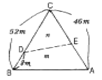
- 18.8m
- 27.2m
- 31.5m
- 14.5m
(정답률: 알수없음)

2. 유토곡선(Mass Curve)을 작성하는 목적과 거리가 먼 것은?
- 토공기계의 선정
- 토량의 균등배분
- 노선의 횡단결정
- 토량의 운반거리 산출
(정답률: 알수없음)
3. 터널내의 곡선을 설치할 때 주로 사용되는 방법이 아닌것은?
- 중앙종거법
- 현편거법
- 내접다각형법
- 외접다각형법
(정답률: 알수없음)
4. 다음 그림에서 ∠ACD=∠ABC=90°, BC=30m, BD=15m일 때 하천의 폭 AB는?
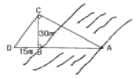
- 40m
- 50m
- 60m
- 70m
(정답률: 알수없음)
5. 단곡선 측설에서 반경 R=100m, 교각 I=30°일 때의 외활(E)과 중앙종거(M)를 구하면?
- E=3.42m, M=3.55m
- E=3.53m, M=3.41m
- E=4.25m, M=3.87m
- E=3.87m, M=4.25m
(정답률: 알수없음)
6. A점의 좌표가 (328, 110)이고, B점의 좌표가 (734, 589)일 때 두점의 수평거리는? (단, 단위는 m임)
- 440.99m
- 442.50m
- 627.91m
- 629.71m
(정답률: 알수없음)
7. 단곡선 설치에서 교각(I)=60°, 접선장(T.L.)=210m이라면 곡선의 반지름은 얼마인가?
- 333.73m
- 343.73m
- 353.73m
- 363.73m
(정답률: 알수없음)
8. 지하시설물도를 작성하는 표시방법 중 잘못 연결된 것은?
- 통신시설 - 녹색
- 가스시설 - 황색
- 상수도시설 - 주황색
- 하수도시설 - 보라색
(정답률: 알수없음)
9. 디지털 구적기로 면적을 측정하였다. 축척 1 : 500 도면을 1 : 1000 으로 잘못 세팅하여 측정하였더니 50m2 이었다면 올바른 면적은?
- 12.5m2
- 20.0m2
- 25.0m2
- 200.0m2
(정답률: 알수없음)
10. 다음 중 일반적으로 널리 쓰이고 있는 종곡선의 형상은?
- 렘니스케이트
- 클로소이드
- 2차 포물선
- 3차 나선
(정답률: 알수없음)
11. 수심이 h인 하천에서 수면으로부터 0.2h, 0.6h, 0.8h 깊이의 유속이 각각 0.76m/sec, 0.64m/sec, 0.45m/sec일 때 2점법으로 계산한 평균유속은?
- 0.545m/sec
- 0.6⑤m/sec
- 0.617m/sec
- 0.623m/sec
(정답률: 알수없음)
12. 하천의 수위 중에서 저수위에 대한 설명으로 옳은 것은?
- 어떤 기간 중 기록되는 최저 수위
- 어떤 기간 중 가장 많이 일어나는 수위
- 몇 년에 한 번씩 발생할 정도의 홍수 때의 수위
- 1년 중 275일간은 이보다 내려가지 않는 수위
(정답률: 알수없음)
13. 하천측량에서 수위관측시 수위표 설치에 부적절한 장소는?
- 하상이나 하안이 안전하고 세굴이나 퇴적이 일어나지 않는 곳
- 수위가 구조물에 의한 영향을 받지 않는 곳
- 잔류 및 역류가 발생 하는 곳
- 하저의 변화가 적은 곳
(정답률: 알수없음)
14. 도로경관에서의 시점에 대한 특징이 아닌 것은?
- 도로에서의 시점은 이동한다.
- 풍경이 변화하고 속도가 커짐에 따라 시야가 넓어진다.
- 시축이 한 방향으로 한정된다.
- 시점을 내부에 두는 내부경관과 도로 밖에 두는 외부 경관으로 나누어진다.
(정답률: 알수없음)
15. 하천측량에서 평면측량에 대한 설명중 옳지 않은 것은?
- 측량의 범위는 제외지 및 제내지 약 300m 이내이다.
- 삼각점의 내각의 크기는 40°∼100°로 한다.
- 하천 수애선의 측량은 평균수위(M.W.L)를 기준으로 한다.
- 삼각점과 삼각점사이를 연결하는 결합 트래버스측량을 실시한다.
(정답률: 알수없음)
16. 지하 500m에서 거리가 400m인 두 지점의 지구 중심에 연직한 연장선이 이루는 지표에서의 거리는 약 얼마인가? (단, 지구 반지름 R=6,370km임)
- 399.07m
- 400.03m
- 400.08m
- 400.10m
(정답률: 알수없음)
17. 도면에서 면적을 측정하니 1450m2이였다. 이 도면이 가로, 세로 모두 1%씩 줄어 있었다면 실제 면적은 약 얼마인가?
- 1445m2
- 1465m2
- 1480m2
- 1495m2
(정답률: 알수없음)
18. 노선의 곡선중에서 반지름이 각기 다른 2개의 원곡선으로 구성되고, 이 두 곡선의 연속점에서 공통접선을 가지며 곡선중심이 공통접선에 대하여 같은 방향에 있는 곡선을 무엇이라고 하는가?
- 단곡선
- 반향곡선
- 클로소이드
- 복곡선
(정답률: 알수없음)
19. 노선측량의 기점에서 곡선의 시점(B.C.)까지의 거리가 1312.50m, 곡선 거리(C.L.)가 320m라면 기점에서 곡선의 종점(E.C.)까지의 거리는?
- 1563.5m
- 1582.5m
- 1621.5m
- 1632.5m
(정답률: 알수없음)
20. 다음 둘레의 길이가 160m인 세 삼각형 A, B, C가 있다. 면적이 큰 순서대로 나열된 것은? (단, 세 변의 길이는 A(50m, 50m, 60m), B(55m, 55m, 50m), C(60m, 60m, 40m) 임.)
- A ＞ B ＞ C
- B ＞ A ＞ C
- A ＞ C ＞ B
- B ＞ C ＞ A
(정답률: 알수없음)
2과목: 사진측량 및 원격탐사
21. 동일한 조건에서 다음과 같은 차이가 있을 경우 입체시에 대한 설명으로 옳은 것은?
- 기선이 긴 경우에는 짧은 경우보다 낮게 보인다.
- 초점거리가 긴 경우가 짧은 경우보다 높게 보인다.
- 낮은 촬영고도로 촬영한 경우가 높은 경우보다 높게 보인다.
- 입체시 할 경우 눈의 위치가 높아짐에 따라 낮게 보인다.
(정답률: 알수없음)
22. 도형자료와 속성자료를 활용한 통합분석에서 동일한 좌표계를 갖는 각각의 레이어정보를 합쳐서 다른 형태의 레이어로 표현되는 분석기능은?
- 공간추정
- 회귀분석
- 중첩
- 내삽과 외삽
(정답률: 알수없음)
23. 메타데이터에 관한 설명으로 틀린 것은?
- 자료의 신원이다.
- 자료의 교환에 필수적이다.
- 지속적인 업데이트시에 특히 중요하다.
- 공공기관에서 제작한 자료는 주로 생략한다.
(정답률: 알수없음)
24. 일정한 비행고도에서 보통각, 광각, 초광각 사진기로 각각 찍었을 때에 축척이 가장 큰 것은?
- 보통각 사진기
- 광각 사진기
- 초광각 사진기
- 고도가 같으므로 일정하다.
(정답률: 알수없음)
25. 축척 1:10,000로 표고 200m의 평탄한 토지를 촬영한 항공사진의 촬영 기선길이는 몇 m 인가? (단, 화면크기 23cm×23cm, 중복도 60% 임)
- 1400m
- 1150m
- 920m
- 2300m
(정답률: 알수없음)
26. 내부표정과 가장 관계가 깊은 것은?
- 도화기의 투영중심
- 축척의 결정
- 사진의 경사
- 기복변위
(정답률: 알수없음)
27. 그림에서 과잉수정계수(over correction factor)를 구하는 식으로 옳은 것은?
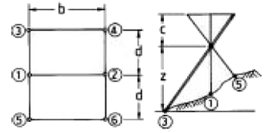
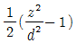
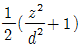
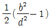
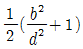
(정답률: 알수없음)
28. 사진을 조정의 기본단위로 하는 항공삼각측량 방법은?
- 독립입체모형법
- 광속(번들)조정법
- 다항식법
- 스트립조정법
(정답률: 알수없음)
29. 축척 1/40,000인 항공사진을 C-계수가 1,200인 도화기로 도화작업을 할 때 신뢰할 수 있는 최소 등고선 간격은? (단, 사진의 초점거리 150mm)
- 2m
- 3m
- 4m
- 5m
(정답률: 알수없음)
30. 광각 사진기로 축척 1 : 6000으로 항공사진을 촬영하고자 한다면 촬영고도를 얼마로 하여야 하는가? (단, 초점거리는 150mm)
- 400m
- 540m
- 900m
- 1200m
(정답률: 알수없음)
31. 샤임플러그(Scheimpflug) 조건은 다음 중 어느 단계에서 고려하여야 하는가?
- 내부표정
- 편위수정
- 사진촬영
- 촬영계획
(정답률: 알수없음)
32. 지평선이 사진상에 찍혀있는 항공사진은?
- 수직사진
- 수평사진
- 저경사사진
- 고경사사진
(정답률: 알수없음)
33. GIS 데이터베이스를 구성하는 정보(information)와 자료(data)에 대한 설명으로 옳은 것은?
- 자료는 의사 결정의 수단으로 활용할 수 있는 가공된 것이다.
- 지리자료는 지리정보를 처리하여 얻을 수 있는 결과물이다.
- 정보와 자료는 같은 의미로 사용되는 개념으로 구분이 무의미하다.
- 모든 정보는 자료를 처리하여 의미를 부여한 것이다.
(정답률: 알수없음)
34. 상호표정인자 옳게 짝지어진 것은?
- 초점거리, 렌즈왜곡보정계수, k, ω, ø
- 대기굴절계수, 지구곡률계수, bx, by, bz
- k, ω, ø, γ, by, bz
- k, ω, ø, by, bz
(정답률: 알수없음)
35. 초점거리 15cm, 화면의 크기 23cm × 23cm, 종중복도 60%, 축척 1/12,000일 때 기선고도비는?
- 0.613
- 0.734
- 0.787
- 0.821
(정답률: 알수없음)
36. 자료의 수집 및 취득시 지형공간정보체계를 이용함으로써 기대할 수 있는 효과에 대한 설명으로 거리가 먼 것은?
- 투자 및 조사의 중복을 극소화 할 수 있다.
- 분업과 합작을 통하여 자료의 수치화 작업을 용이하게 해 준다.
- 상호간의 자료공유와 자료입수가 쉽지 않으므로 보안성이 좋아진다.
- 자료기반(database)과 전산망 체계를 통하여 자료를 더욱 간편하게 사용하게 한다.
(정답률: 알수없음)
37. 항공사진을 이용한 지형도 제작 단계를 크게 3단계로 구분할 때 작업 순서가 옳게 나열된 것은?
- 촬영→ 기준점측량→ 세부도화
- 세부도화→ 촬영→ 기준점측량
- 세부도화→ 기준점측량→ 촬영
- 촬영→ 세부도화→ 기준점측량
(정답률: 알수없음)
38. 화면의 크기 23㎝×23㎝인 사진기로 평탄한 지역을 촬영고도 3,000m로 촬영해서 연직사진을 얻었으며 그 면적은 21.16㎞2 이었다. 이 사진기의 초점거리는?
- 15㎝
- 16㎝
- 18㎝
- 20㎝
(정답률: 알수없음)
39. 지형도를 제작하기 위한 항공사진의 축척을 결정할 때 고려하여야 할 사항으로 가장 거리가 먼 것은?
- 항공사진의 크기
- 지형도의 축척
- 소요 정확도
- 사용 도화기의 성능
(정답률: 알수없음)
40. 위상(Topology)관계에 관한 설명 중 맞지 않는 것은?
- 공간자료의 상호관계를 정의한다.
- 인접한 점, 선, 면사이의 공간적 대응관계를 나타낸다.
- 연결성, 인접성 등과 같은 관계성을 통하여 지형지물의 공간관계를 인식한다.
- 래스터 데이터(격자자료)는 위상을 가질 수 있으므로 공간분석의 효율성이 높다.
(정답률: 알수없음)
3과목: GIS 및 GPS
41. 측지학에 대한 설명으로 옳지 않은 것은?
- 지구곡률을 고려한 반경 11㎞이상인 지역의 측량에는 측지학의 지식을 필요로 한다.
- 지구표면상의 길이, 각 및 높이의 관측에 의한 3차원 좌표 결정을 위한 측량만을 의미한다.
- 지구표면상의 상호 위치관계를 규명하는 것을 기하학적 측지학이라 한다.
- 지구내부의 특성, 형상 및 크기에 관한 것을 물리학적 측지학이라 한다.
(정답률: 알수없음)
42. 삼변측량에 관한 설명으로 옳지 않은 것은?
- 삼각점의 위치를 변장측정으로 구하는 측량이다.
- 삼변측량도 기하학적 조건을 만족시킨다.
- cos 법칙이 이용된다.
- 1개 각을 관측하기 위해서 정밀한 측각기가 필요하다.
(정답률: 알수없음)
43. 지표면상 어느 한 지점에서 진북과 도북간의 차이를 무엇이라 하는가?
- 자오선 수차
- 구면수차
- 자침편차
- 연직선 편차
(정답률: 알수없음)
44. 전자파 거리 측량기를 전파 거리 측량기와 광파 거리 측량기로 구분할 때 다음 설명 중 틀린 것은?
- 일반 건설 현장에서는 주로 광파 거리 측량기가 사용된다.
- 광파 거리 측량기는 가시 광선, 적외선, 레이저광 등을 이용한다.
- 전파 거리 측량기는 안개나 구름에 의한 영향을 크게 받는다.
- 전파 거리 측량기는 광파거리 측정기보다 주로 장거리 측정용으로 사용된다.
(정답률: 알수없음)
45. 측점의 좌표값이 A(-30, -40), B(+60, -80), C(+40, +20)일 때 측선 CB의 방위는?
- N 281°, 18′, 36″, E
- S 101°, 18′, 36″, E
- S 171°, 41′, 24″, W
- N 78°, 41′, 24″, W
(정답률: 알수없음)
46. 비교적 폭이 좁고 거리가 긴 지역에 적합하여 하천측량, 노선측량, 터널측량 등에 이용되는 삼각망은?
- 단열삼각망
- 유심다각망
- 사변형망
- 격자삼각망
(정답률: 알수없음)
47. 시가지에서 16변형 폐합트래버스 측량을 한 결과 측각오차가 2'15" 발생하였다. 시가지 폐합트래버스의 허용오차를 20√n ~ 30√n (초)라 할 때 이 오차의 처리 방법은? (단, n : 트래버스의 측점 수)
- 각 측정의 정확도가 같을 때에는 오차를 각의 크기에 비례하여 배분한다.
- 각 측정의 정확도가 다를 때에는 오차를 각의 크기에 관계없이 균등하게 배분한다.
- 변의 길이의 역수에 비례하여 각 각에 배분한다.
- 허용오차 보다 크므로 재측한다.
(정답률: 알수없음)
48. 다음 중 지형도의 이용 분야가 아닌 것은?
- 지적도면의 작성
- 등경사선의 도출
- 면적의 도상측정
- 저수량 및 토공량의 산정
(정답률: 알수없음)
49. 다음과 같은 삼각망에서 CD의 거리는?
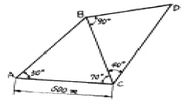
- 383.022m
- 433.013m
- 500.013m
- 577.350m
(정답률: 알수없음)
50. 도상에서 제도 허용오차가 0.3㎜일 때 중심맞추기 오차(편심 거리)를 300㎜까지 허용할 수 있는 축척은?
- 1/100
- 1/500
- 1/1000
- 1/2000
(정답률: 알수없음)
51. 그림과 같이 하천을 횡단하여 수준 측량을 하였을 경우 D점의 지반고는? (단, 측점 B, C는 수면과 일치하며 A점의 지반고는 10m임)
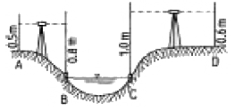
- 8.4m
- 9.7m
- 10.0m
- 10.1m
(정답률: 20%)
52. 다음 등고선의 성질에 대한 설명으로 옳지 않은 것은?
- 경사가 급할수록 등고선 간격이 좁다.
- 경사가 같으면 등고선 간격이 같고 서로 평행하다.
- 등고선은 분수선과는 직교하고 계곡선과는 평행하다.
- 등고선은 서로 만나는 경우도 있다.
(정답률: 알수없음)
53. 다음 중 전시(FS)와 후시(BS)의 거리를 동일하게 하므로써 제거할 수 있는 오차가 아닌 것은?
- 광선의 굴절에 의한 오차
- 지구의 곡률에 의한 오차
- 수준기 기포관축이 시준선과 평행하지 않은 오차
- 표척의 읽음오차
(정답률: 알수없음)
54. 그림과 같이 관측하는 각도 측정 방법은?
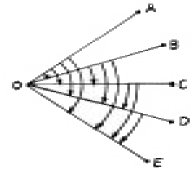
- 배각법
- 조합각 관측법
- 방향각법
- 단측법
(정답률: 알수없음)
55. 삼각형 A,B,C 의 변길이가 각각 40km일 때 내각을 오차 없이 실측한 결과에 대한 설명으로 옳은 것은?
- 180°보다 크다.
- 180°보다 클 때도 있고 작을 때도 있다.
- 180°보다 작다.
- 180°이다.
(정답률: 알수없음)
56. A, B 두 삼각점의 평면직각좌표가 A(-350.139, 201.326), B(310.485, -110.875)일 때 측선AB의 방위각은? (단, 단위는 m)
- 25°17′41″
- 154°42′19″
- 208°17′41″
- 334°42′19″
(정답률: 알수없음)
57. 거리 200㎞를 직선으로 측정하였을 때 지구곡율에 따른 오차는? (단, 지구의 반경은 6370㎞ 이다.)
- 14.43m
- 15.43m
- 16.43m
- 17.43m
(정답률: 알수없음)
58. 평판측량에서 전진법에 의한 변의 수가 25일 때 허용되는 최대 폐합오차는? (단, 하나의 측점에서 허용되는 오차는 ±0.3mm로 함)
- ±0.3mm
- ±0.9mm
- ±1.2mm
- ±1.5mm
(정답률: 알수없음)
59. 2점 사이의 거리를 같은 조건으로 5회 측정하여 다음과 같은 결과를 얻었다. 최확값에 대한 확률오차는 얼마인가?
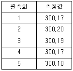
- ±0.002m
- ±0.004m
- ±0.006m
- ±0.008m
(정답률: 알수없음)
60. 평탄한 지형의 A점에서 10km 떨어진 B점을 삼각측량하려고 할 때 B점에 설치할 표척의 최소 높이는? (단, A점의 기계고, 표고 및 기차는 무시하며, 지구곡률반경은 6,370km이다.)
- 1.36m
- 4.38m
- 7.85m
- 10.62m
(정답률: 알수없음)
4과목: 측량학
61. 다음 중 난외주기에 포함되지 않는 것은?
- 건물의 주기
- 편집년도
- 도엽번호
- 철도, 도로의 행선지명
(정답률: 알수없음)
62. 측량심의회의 심의 사항과 관계가 먼 것은?
- 측량도서의 발간
- 공공측량의 심사
- 측량기술의 연구·발전
- 기본측량에 관한 계획의 수립 및 실시
(정답률: 알수없음)
63. 다음 중 임시설치표지의 형상으로 옳은 것은?
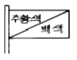
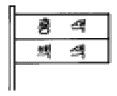
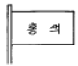
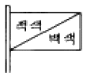
(정답률: 알수없음)
64. 다음 중 일시표지에 해당되는 것은?
- 수준점 표석(B.M)
- 측표(測標)
- 표기(標旗)
- 임시 측량표지 막대
(정답률: 알수없음)
65. 기본측량의 실시공고를 하는 경우, 공고내용에 포함되어야 하는 사항중 옳지 않은 것은?
- 측량의 실시기간
- 측량의 실시지역
- 측량의 종류
- 측량의 실시업자
(정답률: 알수없음)
66. 기본측량을 실시하기 위하여 타인의 토지나 건물에 출입할 경우에 대한 다음 사항 중 옳지 않은 것은?
- 타인의 건물에 출입하고자 할 경우에는 권한을 표시하는 증표를 제시하여야 한다.
- 농작물이 있는 토지에 출입할 경우에는 미리 그 점유자에게 통지하여야 한다.
- 점유자를 알 수 없을 경우에는 출입하여서는 안된다.
- 출입으로 인하여 피해가 발생하였을 경우에는 보상하는 것이 원칙이다.
(정답률: 알수없음)
67. 국토지리정보원장이 간행하는 지도의 축척이 아닌 것은?
- 1 : 500
- 1 : 5,000
- 1 :50,000
- 1 : 1,000,000
(정답률: 알수없음)
68. 중앙지명 위원회의 구성에 대한 설명으로 틀린 것은?
- 위원장은 국토지리정보원장이 된다.
- 위원장 및 부위원장은 각 1인으로 구성된다.
- 위원장 및 부위원장을 포함한 15인 이내의 위원으로 구성한다.
- 위원장 및 부위원장을 제외한 위원은 국토지리정보원장이 규정에 의해 위촉하는 자가 된다.
(정답률: 알수없음)
69. 공공측량의 측량성과와 측량기록의 사본을 교부 받고자 하는 자는 어디에 신청하는가?
- 건설교통부장관
- 국토지리정보원장
- 지방국토관리청장
- 공공측량계획기관
(정답률: 알수없음)
70. 국토지리정보원장이 측량제도 및 기술의 발전을 위하여 실시할 시책 중 옳지 않은 것은?
- 수치지형정보의 표준화
- 측량용역업의 해외진출 활성화
- 지도제작기술의 개발 및 자동화
- 정밀측량기기의 개발
(정답률: 알수없음)
71. 기본 측량실시로 인한 손실보상에 대한 내용으로 틀린 것은?
- 손실을 받은자와 국토지리정보원장이 협의 하여야 한다
- 규정에 의한 협의가 성립되지 아니한 때에는 관할토지 수용위원회에 재결을 신청할 수 있다
- 재결에 대한 불복이 있는 자는 재결서 정본의 송달을 받은날로부터 최대 7일 이내에 중앙토지수용위원회에 이의를 신청할 수 있다.
- 이의신청은 지방토지수용위원회를 거쳐야 한다.
(정답률: 알수없음)
72. 1 : 25,000 지형도의 조곡선(助曲線) 간격은?
- 2m
- 5m
- 주곡선의 1/2
- 주곡선의 1/4
(정답률: 알수없음)
73. 다음 지도등의 측량성과 사용에 따른 심사사항이 아닌 것은?
- 표준작업방법
- 난외표시
- 작업주기 및 일자
- 지형, 지물의 표시
(정답률: 알수없음)
74. 측량업 등록의 결격사유에 대한 설명 중 옳지 않은 것은?
- 파산자로서 복권되지 아니한 자
- 벌금형 선고를 받은 자
- 금치산 선고를 받은 자
- 측량업 등록이 취소된 날로부터 2년을 경과하지 아니한자
(정답률: 알수없음)
75. 지도도식 규칙이 반드시 적용되는 것은 어느 것인가?
- 군사용지도와 그 간행물
- 축척 1/1,000,000미만의 소축척지도
- 공공측량 성과를 간접으로 이용하여 발간한 지도에 관한 관행물
- 세계전도
(정답률: 알수없음)
76. 대한민국의 경위도 원점이 있는 곳은?
- 인천시 용현동
- 수원시 원천동
- 종로구 세종로
- 동대문구 휘경동
(정답률: 알수없음)
77. 측량법에서 정의된 용어에 대한 설명 중 그 내용이 옳지 않은 것은?
- 측량에는 지도의 제작, 연안해역의 측량과 측량용사진의 촬영을 포함한다.
- 일반측량이라 함은 기본측량 및 공공측량외의 측량을 말한다.
- 측량계획기관이라 함은 기본측량 및 공공측량에 관한 계획을 수립하는 자를 말한다.
- 기본측량이라 함은 모든측량의 기초가 되는 측량으로서 건설교통부장관의 명을 받아 지방자치단체의 장이 실시하는 것을 말한다.
(정답률: 알수없음)
78. 매년 1회이상 관할구역안에 있는 일시표지의 현황을 조사하는 자는?
- 도지사
- 경찰서장
- 국토지리정보원장
- 구청장
(정답률: 알수없음)
79. 측량법 제정의 목적중 옳지 않은 것은?
- 측량의 정확성 확보
- 측량제도의 발전
- 측량성과 사용의 통제
- 측량에 관한 기준을 정함
(정답률: 알수없음)
80. 측량업을 폐업한 때에는 측량업자이었던 개인은 그 사유가 발생한 날로부터 최대 몇일 이내에 신고하여야 하는가?
- 10일
- 20일
- 30일
- 40일
(정답률: 알수없음)
이 문제에서는 AD를 m:n = 1:1로 나누어야 하므로, AD = (m+n)x, AE = mx, DE = nx 로 놓고 문제를 풀어보겠습니다.
우선 △ADE의 면적은 (AE × DE)/2 = (mnx^2)/2 입니다. △ADE와 △ABC의 면적이 같으므로, (mnx^2)/2 = (BC × AD)/4 입니다.
따라서 x = (BC × AD)/(2mn) 입니다. 이제 AD = (m+n)x 이므로, AD = (m+n) × (BC × AD)/(2mn) 입니다.
양변을 AD로 나누면, 1 = (m+n)/(2mn) × BC 입니다. 따라서 AE = mx = (m/(m+n)) × AD = (m/(m+n)) × (2mn)/(m+n) × BC = 2mBC/(2m+2n) 입니다.
이를 계산하면 AE = 18.8m 이므로, 정답은 "18.8m" 입니다.